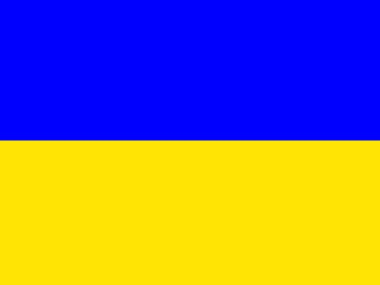

| Домашня сторінка | Інформація | Фотогалерея |
Україна - це велика країна в Східній Європі, відома православними церквами, чорноморськими курортами і лісистими горами.
У Києві, столиці країни, розташований Софійський собор, прикрашений золотими куполами, мозаїкою XI століття і фресками.
Над річкою Дніпро височить монастир Києво-Печерська лавра, місце паломництва багатьох православних християн.
В її скитах зберігаються релігійні реліквії, а в катакомбах - муміфіковані останки православних монахів.
Флаг України
Герб України
Гімн України
Ще не вмерла України і слава, і воля,
Ще нам, браття молодії, усміхнеться доля.
Згинуть наші воріженьки, як роса на сонці.
Запануєм i ми, браття, у своїй сторонці.
Душу й тіло ми положим за нашу свободу,
І покажем, що ми, браття, козацького роду.